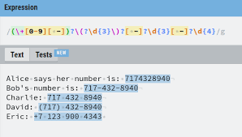
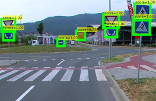
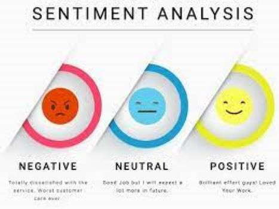

PROJECTS
Laptop Price Prediction
Problem statement -- "What would be the best price a company needs to sell for a laptop with a certain specifications for the maximum customers to buy them.
Now, to solve this problem , I scraped the Laptop data from the Internet. This is a Regression problem, in which I have developed an application to predict the ideal price of a laptop given several specifications.I used several Machine Learning models in the trail and test phase and selected the Best Performance Model out of them. View here
Movie Recommender System
Problem Statement -- "Take an input movie from the user and recommend 5 movies similar to the input movie."
Developed a Hybrid Movie Recommender System with the help of recommender techniques such as Popularity Based Recommender, Content Based Recommender and Collaborative Based Recommender which takes an input movie and recommends similar movies based on the input movie. For this I have used ML models like KNN and the concept of Cosine Similarity.Finally ,using Streamlit I deployed the modelView here
Find the Nearest Pub
Problem Statement -- "Create a multi page application which finds the nearest pub." .View here
Created a multi-page application using Streamlit which finds nearest pub using python. Based on the Postal Code or Local Authority, display all the pubs in the area chosen, on top of a map. By asking the user to enter his/her Latitude and Longitude. Displayed the nearest 5 Pubs on the map. Using Euclidean Distance to find the nearest pubs.
Future Sales Prediction (Case Study)
Problem Statement -- "Predict the Future Sales of several poducts with the information at hand".
With the dataset at hand,firstly I have performed several Exploratory Data Analysis techniques such as Univariate , Bivariate Analysis after cleaning the data to find the relationship between the features.Then,I used several Regression models such as Lineas Regression, k-NN etc., and selected the Best performance model using several Model Evaluation techniques such as RMSE, MSE etc. View here
Online Payment Fraud Detection
Problem Statementr -- "Detecting online Payment frauds with ML ".
In order to achieve this we need to train a ML model for classifying fradulent and Non-fradulent payments.Obviously, the first thing we need to do is Data Cleaning i.e., dealing with missing values, outliers etc.After that we can train a classification model to classify fraud and Non-fradulent transactions. For this classification problem we can test models like Decision Tree,Logistic Regression, kNN etc., and then select the Best Model based on Evaluation metrics such as Accuracy, Precision, F1 Score etc. View here
Regex Clone
Problem Statement -- "Create a clone of the website Regex101.com".
This app clones the core functionality of regex101.com. It matches a text string with a regex and display all the matches. I have used Flask and Python's Regular Expression module, it provides a simple and efficient way to test Regular Expressions. View here
Traffic Sign Detection and recognition using DL and CNN
Problem Statement -- "Detecting and Recognizing a traffic sign ".
In order to build this, there are 2 phases which are Phase 1: Detect the traffic sign Phase 2: Recognize the sign. For this I built a CNN model with the architecture of 2 Convolution layers and a Maxpool layer then a Dense Fully Connected Layer and finally a Dense Layer. The activation functions which I used are 'ReLu' and "Softmax" for Convolution and Dense layers respectively. Then after training the CNN model, we Test the model using various evaluation metrics such as Accuracy Score , Precision etc. Also the Loss function used here is 'Categorical Crossentropy' since its Classification problem with more than 2 classes . View here
Dog’s Breed Identification
Problem Statement -- "Developing a CNN model which Identifies the dog's breed " View here
In this, I used ResNet's architecture under Transfer Learning technique, which identifies the breed of a dog. The Loss function used here is also 'Categorical Crossentropy' since its Classification problem with more than 2 classes .
Hate Speech Detection
Problem Statement -- "Developing a model which recognizes Hate Speech from Twitter's Tweets to help make the platform more safe for everyone"
This is part of Sentiment Analysis. We have to detect hate speech in people's tweets so that the platform is a healty space. Ofcourse, we have to start with Text Preprocessing as it's text data i.e., Removing Puncutations and Stop words etc. After that I have performed Tokenizing the data. Converting the words into Vectors. Now, for the Neural Network Model, the architecture I have used is 2 Embedding layers, LSTM layer, 1 FC layer, BatchNormalization layer, Dropout Layer, Output Layer. The Output layer outputs probablities for the 3 classes (0- Hate Speech, 1- Offensive Language, 2- Neither). The optimizer I have used in this is 'Adam', Activation Function is 'Softmax", and Loss function is "Categorical Crossentropy" and finally Evaluation Metrics used is "Accuracy"View here
Sentiment analysis
Problem Statement -- "Develop a model which analyzes the sentiment of customer's reviews in order to understand their experience ".View here
As usual, I have started with Text Preprocessing i.e., Removal of Stop words and Punctuation etc. After that I used CountVectorizer and GridSearchCV for Transforming text to vectors and for Hyper-parameter tuning respectively.Then I have used Random Forest model to solve this problem as its simple enough with just 2 classes(0-Positive Sentiment 1- Negative Sentiment) The evaluation metrics used here are Accuracy, Precision, Recall, Confusion Matrix.
Video Game Sales Prediction

Problem Statement -- "Develop a model which predicts the potential sales of a Video Game".View here
As we know the video games have many genres/categories, first thing I did was performing EDA on the dataset after cleaning it. This helps us to understand the dataset a bit more. Since this is regression problem , I have used models like Linear Regression, Decision Tree, k-NN etc and selected the best performance model based on regression metrics like MSE, MAE.
Rice Classification
Problem Statement -- "Develop a model which predicts Type of Rice grain based on the features such as texture, shape and color ".View here
Rice classification involves categorizing and predicting different rice grains based on their features such as texture, shape and color. TO solve this problem, I have used a CNN with VGG-16 architecture based on Transfer Learning.The optimizer I have used in this is 'Adam', and Loss function is "Categorical Crossentropy" and finally Evaluation Metrics used is "Accuracy"
ATM Withdrawal Prediction
Problem Statement -- "Develop a model which predicts the Total Amound withdrawn from ATM to Forecast the Cash Demand of ATM's".View here
Built an ANN model based on the features that I selected using various Data Analysis techniques to predict the total amount withdrawn using ATM"